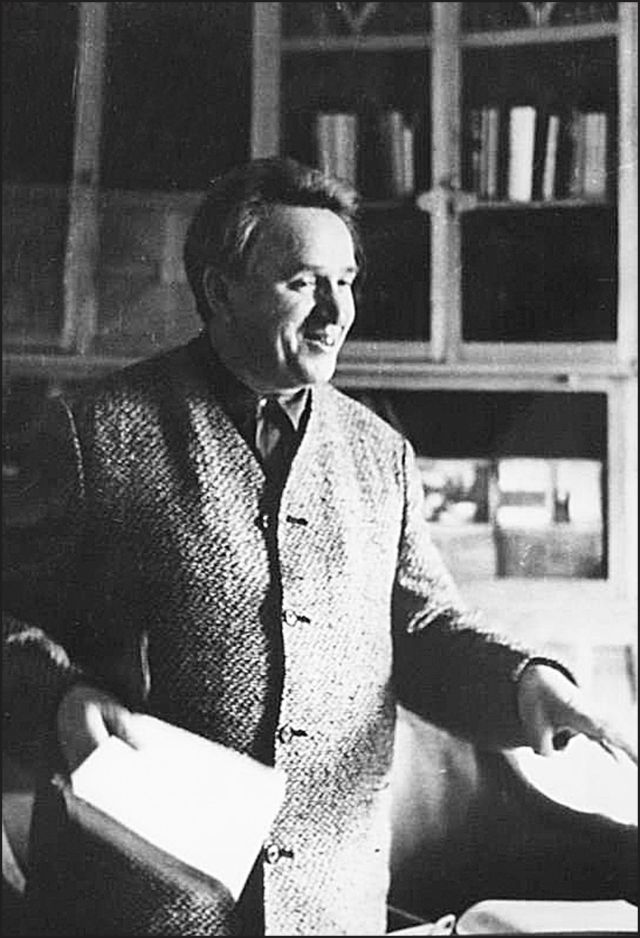
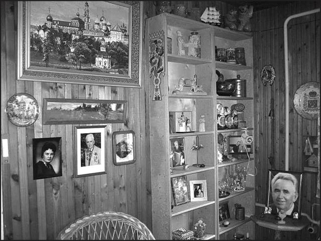

Страницы авторов "Тёмного леса"
Пишите нам! temnyjles@narod.ru
В следующем году страна отметит 100 лет со дня рождения замечательного русского писателя и поэта, собирателя фольклора Виктора Федоровича Бокова. В России есть люди, которым не знакомо это имя, но вряд ли найдется человек, который никогда не слышал песен "На Мамаевом кургане тишина", "Оренбургский пуховый платок", "Я назову тебя зоренькой", "На побывку едет молодой моряк". А ведь они все написаны на стихи Бокова.
Много событий выпало на долю Виктора Федоровича, да и отпущено на земле ему было немало - 95 лет. Родился Боков 6 (по новому стилю - 19) сентября 1914 года в деревне Язвицы Владимирской губернии. Раннее начало трудового пути токарем и зоотехником, посещение литературного кружка, которым руководил М.М. Пришвин, вступление в Союз писателей СССР. затем - начало войны, арест курсанта Бокова за "разговоры", 58-я статья и 4 года сталинских лагерей. Не согнули никакие обстоятельства яркую творческую натуру писателя, а наоборот закалили, придали ему жизненного опыта. Тяжелые испытания сталинских лет не озлобили Бокова. Расцвет творчества и широкое признание пришли к нему в 50-60-х годах. Важной вехой в биографии Виктора Федоровича было состоявшееся еще до войны знакомство с Борисом Пастернаком. Последний, наряду с Ахматовой, представитель русской культуры Серебряного века на отечественном "литературном Олимпе", Борис Леонидович по-отечески тепло принял молодого коллегу по перу. Общение с блестяще образованным человеком высочайшей культуры Пастернаком стало для Виктора Федоровича своего рода духовным становлением. Большое влияние на развитие творчества и личности Бокова оказало и общение с выдающимся и невероятно самобытным писателем с нелегкой судьбой - Андреем Платоновым. В 1941 году вместе с Пастернаком, Бокову довелось провожать в эвакуацию в Елабугу Марину Ивановну Цветаеву. Впоследствии он напишет, как бы обращаясь к трагически ушедшей поэтессе:
Смотрели Вы на нас двоих
Рассеянно, прощально.
Я помню: Пастернак затих,
И стало так печально.
Немало и других знаковых встреч было в биографии Виктора Федоровича.
В 1970-х годах, будучи уже признанным корифеем советской литературы, Боков неоднократно приезжал в Кисловодск. Он очень полюбил наш курортный город, обласканный горным солнцем. Отдыхал обычно в любимом им за особую интеллектуальнотворческую атмосферу санатории АН СССР имени А.М. Горького. Как-то отдыхал и в санатории имени Г.К. Орджоникидзе. Общительность Бокова не знала границ, и он бывал душой любой компании отдыхающих санатория. Тем более что Виктор Федорович отличался прекрасным чувством юмора, а присущая ему порой какая-то детская непосредственность вызывала у многих искреннюю симпатию. В рукописном альманахе "Горькоккола", который был создан в санатории имени А.М. Горького в 1970х годах по аналогии с "Чукоккалой", доктор технических наук, профессор и изобретатель Давид Лазаревич Мотов после творческой встречи с Боковым записал:
Боков сбоку не бывает,
Виктор Боков на виду.
И о Бокове узнают
От Бордо до Катманду.
"На побывку" едет Боков
Только в Горько-Кисловодск
И вот здесь под милым оком
Как поэт он рос и рос.
Очарован "тополями
И камнями" - их не счесть.
Он со строчками "в кармане"
Уезжает с этих мест.
А сам Боков сочинил и записал в один из альбомов "Горькокколы" "Оду Кисловодску". Вот только первые несколько строф из нее:
Кисловодский кислород,
Он особенного рода -
Как конфета лезет в рот,
Слаще сахара и меда!
Кисловодский терренкур
По тропе отлого-узкой -
Это вам не перекур
И не выпивка с закуской.
Богатырь-вода нарзан
Не копеечная трата,
Не стихийный партизан, -
Это воин Гиппократа!
Подписал эту оду поэт также со свойственным ему юмором: "Виктор Боков. Курортная книжка N000957. Кровяное давление 120/70. Палата N315. Срок с 18 января 1973 г. по 10 февраля 1973 г., лечащий врач Галина Николаевна Михеева".
Очень дорогим другом для Виктора Федоровича в Кисловодске стала Лидия Николаевна Бурдина, которая в ту пору была директором Дома культуры медработников. Это культурное учреждение стало настоящим местом притяжения для целого ряда замечательных деятелей искусства и ученых. Там устраивались литературные вечера, показы художественных и документальных фильмов, которые были практически недоступны обычному советскому человеку (как например фильмы А. Тарковского или привезенный профессором из Сибирского отделения АН СССР Юрием Шефнером американский фильм о высадке американских астронавтов на Луну). Как-то Лидия Николаевна организовала в Доме культуры и творческий вечер Бокова. Поэт больше трех часов без перерыва читал стихи, а слушатели настолько были очарованы магией боковского слова, что потеряли счет времени. Вечер закончился в половине двенадцатого ночи. А Лидии Николаевне пришлось затем звонить во все кисловодские здравницы и договариваться, чтобы отдыхающих пустили в их санатории в такой поздний час.
Участвовал Виктор Федорович и в других культурных мероприятиях, общался с выдающимися литераторами. В 1973 году он в качестве слушателя принял участие в творческом вечере писателя Владимира Солоухина в санатории имени А.М. Горького. Солоухин позволял себе говорить в те "застойные" годы поразительно смелые вещи о проблемах литературы и вообще советской жизни.
Трогательная дружба связывала Бокова с классиком литературы народов СССР Кайсыном Кулиевым. Виктор Федорович ездил к Кулиеву в Нальчик, откуда ими была совершена поездка в Приэльбрусье. Под впечатлением от этого Боков написал стихотворение "Огонь поэзии", которое посвятил Кайсыну Шуваевичу, и еще несколько других.
Природа Кавказа покорила Бокова. Вообще природа была для Виктора Федоровича, наверное, самым неиссякаемым источником вдохновения. Поэт бесконечно любил огромный курортный парк Кисловодска и уходил в самые отдаленные его уголки, поднимался на горы. Во время отдыха в санатории имени А.М. Горького, он написал такие замечательные стихотворения как "Калина", "Два родника", "Кисловодские тополя", "Моя гармонь", "Зрелость". Отдельное стихотворение было посвящено мостику "Дамский каприз". Во всех этих произведениях философские мысли автора выражаются через восприятие им красот природы, богатства ее даров как высшей ценности. Однажды Лидия Николаевна пожаловалась Бокову на то, что на улице Коминтерна для каких-то "целей благоустройства" срубили огромный и совершенно здоровый еще тополь. Такой факт не мог оставить поэта равнодушным. И в тот же день в Пятигорске, выступая по телевидению, Виктор Федорович прочитал буквально "на ходу" написанное им стихотворение о загубленном тополе.
Даже в преклонном возрасте, когда Боков уже не приезжал в Кисловодск, - тем не менее, продолжал интересоваться тем, как обстоят дела в его любимом курортном городе. В 1994 году он написал Лидии Николаевне письмо, в котором спрашивал:
Есть ли какие следы от меня в Кисловодске?
Это не я ли на старой стою остановке? <...>
Как там сегодня в аллее моей тополиной?
Старцы живые не замерли древней былиной?
В те годы Боков, несмотря на активную общественную деятельность и весьма видную роль в Союзе писателей, предпочел московской суете более размеренную и спокойную обстановку подмосковного дома в знаменитом Переделкине - в местах, связанных с именами Пастернака, Чуковского и многих других выдающихся людей. И даже несмотря на то, что скончался Виктор Федорович в Москве, похоронили его на знаменитом переделкинском кладбище - поблизости от могилы его старшего друга и учителя Бориса Пастернака. Столь любимый писателем переделкинский дом, хотя и не является пока еще музеем, но бережно сохраняется женой и музой Бокова - невероятно гостеприимной и приветливой Алевтиной Ивановной. В прошлом году и мне довелось ощутить гостеприимство и радушие хозяйки этого дома, в котором все остается таким, каким было при жизни писателя и поэта.
Хочется верить в то, что "кисловодские адреса" Виктора Федоровича также не будут забыты. Хочется надеяться, что станут доброй традицией вечера памяти Бокова, наподобие тех, что был проведен в июне прошлого года в кисловодском санатории имени А.М. Горького стараниями почитателей его творчества: московским ученым, кандидатом философских наук Юрием Юрьевичем Черным, Лидией Николаевной Бурдиной и находившимися тогда в Кисловодске на отдыхе горькоккольцами.
 
В.Ф. Боков в библиотеке санатория им. А.М. Горького. 1973 г. Переделкино. Уголок гостиной на даче В.Ф. Бокова. Фото Ю. Черного.
Вячеслав Яновский. Неакадемические сочинения